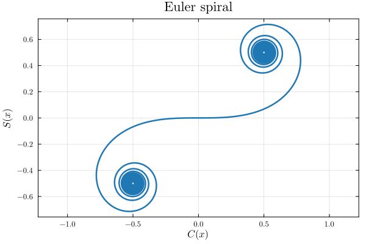

FewSpecialFunctions.jl
FewSpecialFunctions.jl provides additional special functions and alternative numerical implementations of some functions that exist elsewhere.
| Functions | Typical use |
|---|---|
| Coulomb wave functions | scattering and bound states of charged particles |
| Whittaker functions | confluent hypergeometric problems, Coulomb problems at complex energy |
| Parabolic cylinder functions | harmonic-oscillator and turning-point problems |
| Fermi-Dirac integrals and Bose–Einstein integrals | carrier and particle statistics in solid-state and statistical physics |
| Debye functions | lattice heat capacity |
| Marcum Q-function | detection probabilities in radar and communications |
| Voigt function | spectral line shapes |
| Fresnel integrals and the Dawson integral | diffraction, error-function-type integrals |
| Clausen functions | polylogarithms on the unit circle |
Installation
The package requires Julia 1.10 or later. In a Julia session, run
import Pkg; Pkg.add("FewSpecialFunctions")Equivalently, press ] at the julia> prompt to enter the package mode (the prompt changes to pkg>), type add FewSpecialFunctions, and press backspace to return to the julia> prompt.
First steps
Load the package and evaluate a few functions at scalar arguments:
julia> using FewSpecialFunctions
julia> round(FresnelC(1.0); digits = 10)
0.7798934004
julia> round(dawson(1.0); digits = 10)
0.5380795069
julia> WhittakerW(0, 0.5, 2) ≈ exp(-1)
trueFunctions act on scalars. Use Julia's dot syntax to apply them to arrays:
julia> round.(FresnelS.([0.0, 0.5, 1.0]); digits = 6)
3-element Vector{Float64}:
0.0
0.064732
0.438259In the REPL, type ? followed by a function name, for example ?dawson, to read its documentation. The same text is collected in the API reference.
Plotting an Euler spiral
The plots in this manual use Plots.jl and LaTeXStrings.jl, which are not installed with FewSpecialFunctions.jl. Install them once with
import Pkg; Pkg.add(["Plots", "LaTeXStrings"])The Euler spiral is the curve $(C(x), S(x))$ traced by the two Fresnel integrals:
using FewSpecialFunctions, Plots, LaTeXStrings
x = range(-25, 25, length = 5000)
plot(
FresnelC.(x), FresnelS.(x);
xlabel = L"C(x)", ylabel = L"S(x)", title = "Euler spiral",
label = nothing, framestyle = :box, aspect_ratio = :equal,
)
Where to go next
- Functions describes each family with its definition, domain, and examples.
- Accuracy and number types states which input types are accepted and how accurate the results are.
- Automatic differentiation explains which derivatives ForwardDiff.jl can compute and how.
- API reference lists the docstring of every exported function.
Contributing, license, and citation
Bug reports and pull requests are welcome at the GitHub repository. CONTRIBUTING.md describes how to run the tests, build this manual, format the code, and report a bug.
The package is distributed under the MIT license. If you use it in published work, please cite it using the metadata in CITATION.cff; GitHub's "Cite this repository" button converts that file to BibTeX or APA format. The methods implemented for each family are listed in the Bibliography.